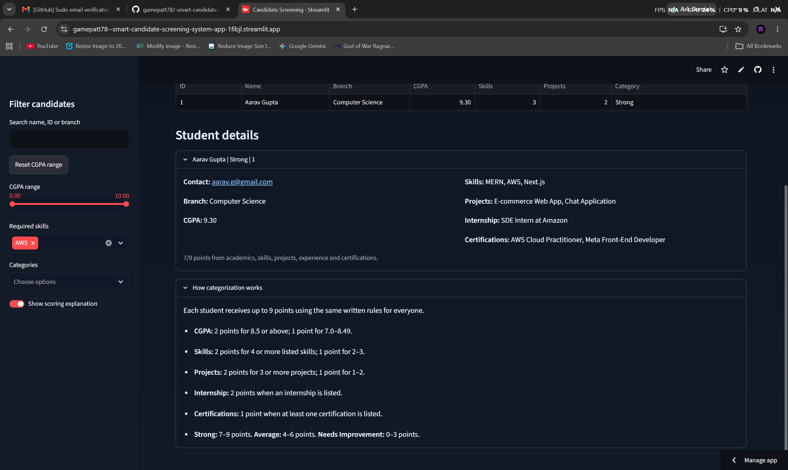
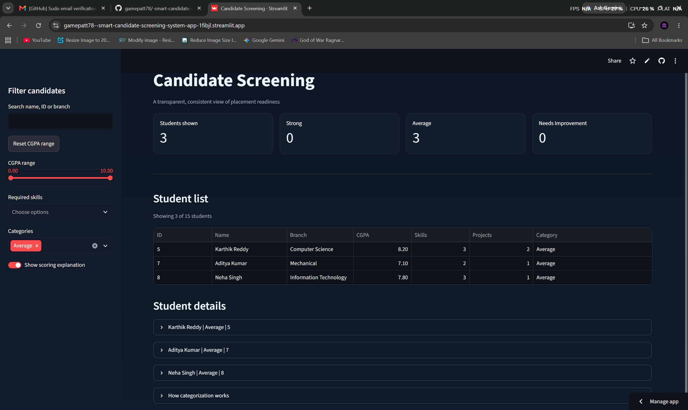
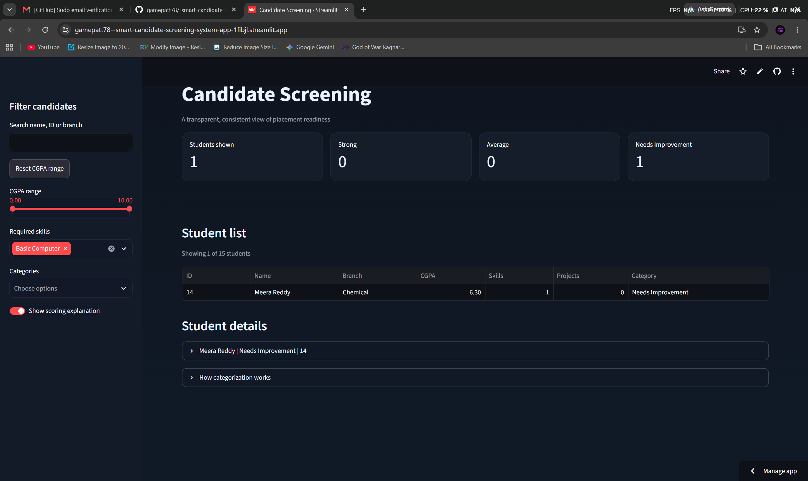
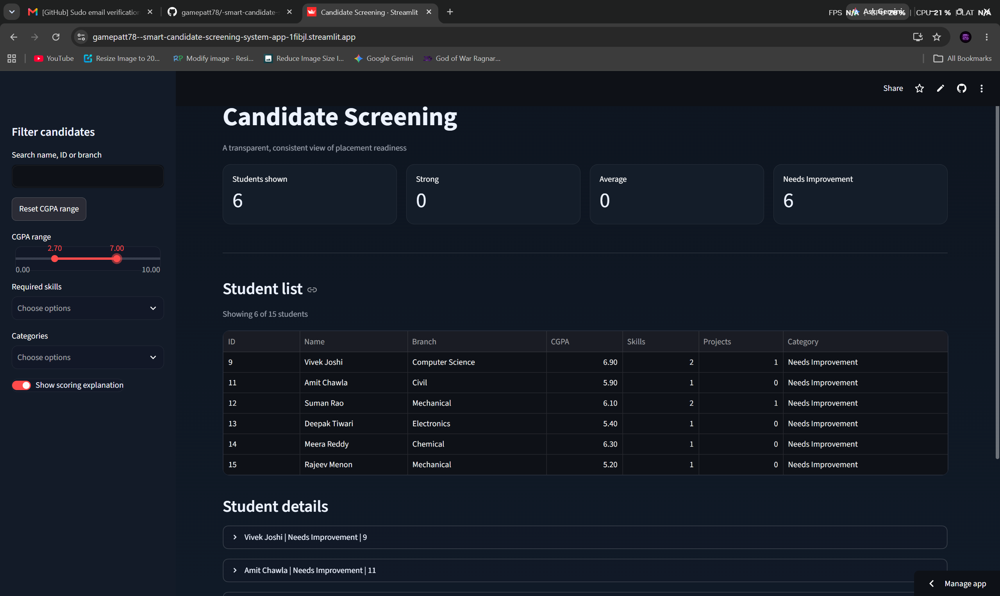
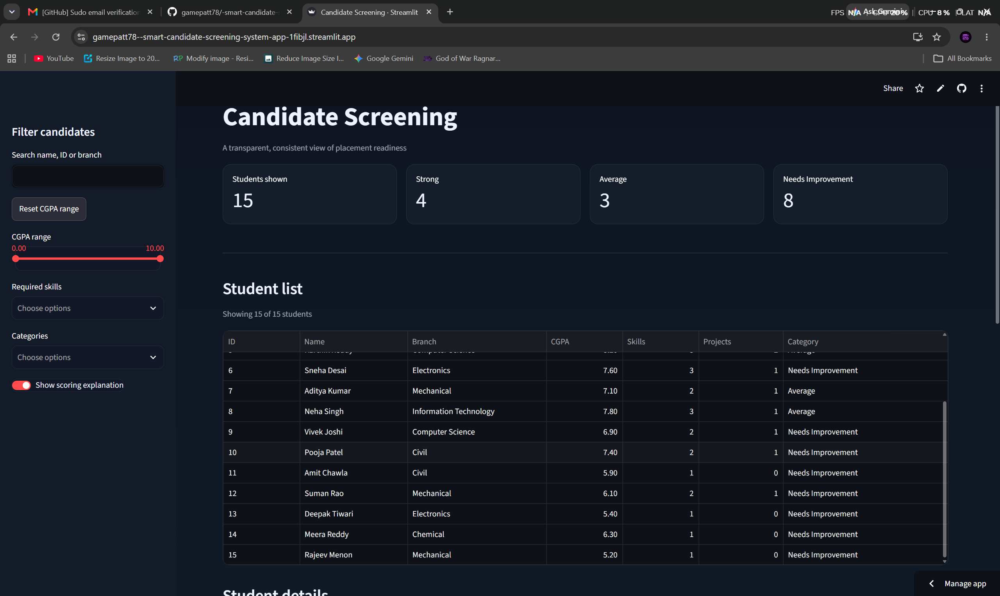

The Smart Candidate Screening System is a transparent web application for helping placement coordinators review student profiles quickly and consistently. It replaces slow, manual spreadsheet screening with a shared rule-based scoring process. Each candidate is evaluated using the same written criteria, and the application explains the reason for every category assigned.
The system supports human decision-making rather than replacing it. Coordinators can filter candidates by identity, branch, CGPA, skills, and readiness category before preparing a recruitment shortlist.
Manual candidate screening becomes unreliable as the number of students increases. Two coordinators reviewing the same dataset may reach different conclusions because the meaning of a “strong” candidate is not formally defined. Strong students can be overlooked when reviews are rushed or inconsistent, while recruitment drives often require a shortlist before there is enough time to thoroughly review every student.
The application reads candidate information from a CSV file, cleans and standardizes the data, calculates a score for each student, and displays the results in an interactive Streamlit dashboard.
It uses deterministic rules rather than a black-box artificial intelligence model. The same candidate data always produces the same score and category, allowing a coordinator to inspect and explain the result in one sentence.
Each candidate can receive a maximum of 9 points:
| Evaluation area | Scoring rule | Maximum |
|---|---|---|
| CGPA | 2 points for 8.5 or above; 1 point for 7.0 to 8.49 | 2 |
| Skills | 2 points for 4 or more skills; 1 point for 2 to 3 skills | 2 |
| Projects | 2 points for 3 or more projects; 1 point for 1 to 2 projects | 2 |
| Internship | 2 points when internship experience is listed | 2 |
| Certifications | 1 point when at least one certification is listed | 1 |
| Total | 9 |
Displays the candidate list, total students shown, and counts for each readiness category.
Searches by candidate name, ID, or branch. Numeric ID searches use exact matching, so searching for ID 2 does not return ID 12.
The range slider supports minimum and maximum values, such as 3.40 to 6.60. The reset button restores the visible range to 0.0 to 10.0.
Coordinators can find candidates with skills such as React and combine this with CGPA and category filters.
Each candidate has expandable details containing contact information, branch, CGPA, skills, projects, internship experience, certifications, and a scoring explanation.
The system cleans missing values, converts CGPA values into numbers, separates list fields such as skills and projects, calculates scores, assigns categories, and applies the selected filters.
The system is a screening aid, not a complete recruitment decision-maker. Its results depend on accurate and complete CSV data. The simple scoring rules may not capture communication ability, interview performance, leadership, or role-specific requirements. Authentication, direct CSV upload, shortlist export, recruiter notes, and role-specific scoring are future enhancements.
The Smart Candidate Screening System addresses inconsistency, delay, and lack of explainability in manual candidate review. By applying written scoring rules to every student and providing practical filters, it helps placement coordinators prepare fair shortlists more efficiently.
The system does not make mysterious decisions. It provides a transparent starting point that coordinators can inspect, explain, and use alongside professional judgment.




